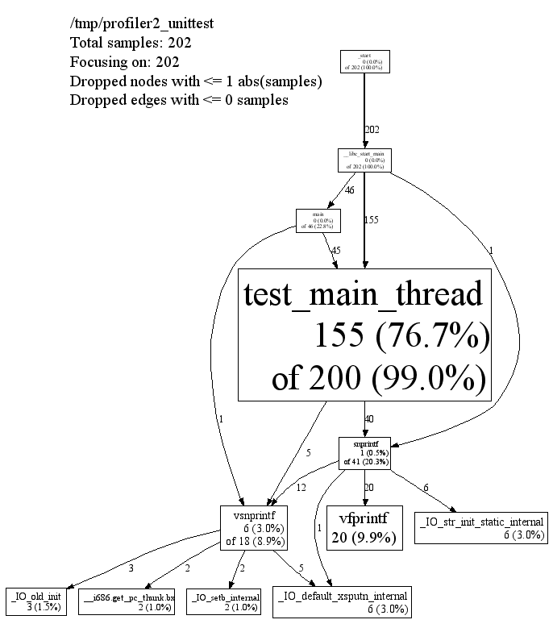
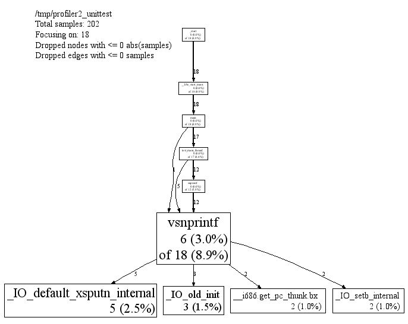

Last modified
This is the CPU profiler we use at Google. There are three parts to using it: linking the library into an application, running the code, and analyzing the output.
On the off-chance that you should need to understand it, the CPU profiler data file format is documented separately, here.
To install the CPU profiler into your executable, add
-lprofiler to the link-time step for your executable.
(It's also probably possible to add in the profiler at run-time using
LD_PRELOAD, e.g.
% env LD_PRELOAD="/usr/lib/libprofiler.so" <binary>,
but this isn't necessarily recommended.)
This does not turn on CPU profiling; it just inserts the
code. For that reason, it's practical to just always link
-lprofiler into a binary while developing; that's what we
do at Google. (However, since any user can turn on the profiler by
setting an environment variable, it's not necessarily recommended to
install profiler-linked binaries into a production, running
system.)
There are several alternatives to actually turn on CPU profiling for a given run of an executable:
Define the environment variable CPUPROFILE to the filename
to dump the profile to. For instance, if you had a version of
/bin/ls that had been linked against libprofiler,
you could run:
% env CPUPROFILE=ls.prof /bin/ls
In your code, bracket the code you want profiled in calls to
ProfilerStart() and ProfilerStop().
(These functions are declared in <gperftools/profiler.h>.)
ProfilerStart() will take
the profile-filename as an argument.
In Linux 2.6 and above, profiling works correctly with threads, automatically profiling all threads. In Linux 2.4, profiling only profiles the main thread (due to a kernel bug involving itimers and threads). Profiling works correctly with sub-processes: each child process gets its own profile with its own name (generated by combining CPUPROFILE with the child's process id).
For security reasons, CPU profiling will not write to a file -- and is thus not usable -- for setuid programs.
See the include-file gperftools/profiler.h for
advanced-use functions, including ProfilerFlush() and
ProfilerStartWithOptions().
You can more finely control the behavior of the CPU profiler via environment variables.
CPUPROFILE_FREQUENCY=x |
default: 100 | How many interrupts/second the cpu-profiler samples. |
CPUPROFILE_REALTIME=1 |
default: [not set] | If set to any value (including 0 or the empty string), use ITIMER_REAL instead of ITIMER_PROF to gather profiles. In general, ITIMER_REAL is not as accurate as ITIMER_PROF, and also interacts badly with use of alarm(), so prefer ITIMER_PROF unless you have a reason prefer ITIMER_REAL. |
pprof is the script used to analyze a profile. It has
many output modes, both textual and graphical. Some give just raw
numbers, much like the -pg output of gcc,
and others show the data in the form of a dependency graph.
pprof requires perl5 to be installed to run.
It also requires dot to be installed for any of the
graphical output routines, and gv to be installed for
--gv mode (described below).
Here are some ways to call pprof. These are described in more detail below.
% pprof /bin/ls ls.prof
Enters "interactive" mode
% pprof --text /bin/ls ls.prof
Outputs one line per procedure
% pprof --gv /bin/ls ls.prof
Displays annotated call-graph via 'gv'
% pprof --gv --focus=Mutex /bin/ls ls.prof
Restricts to code paths including a .*Mutex.* entry
% pprof --gv --focus=Mutex --ignore=string /bin/ls ls.prof
Code paths including Mutex but not string
% pprof --list=getdir /bin/ls ls.prof
(Per-line) annotated source listing for getdir()
% pprof --disasm=getdir /bin/ls ls.prof
(Per-PC) annotated disassembly for getdir()
% pprof --text localhost:1234
Outputs one line per procedure for localhost:1234
% pprof --callgrind /bin/ls ls.prof
Outputs the call information in callgrind format
Text mode has lines of output that look like this:
14 2.1% 17.2% 58 8.7% std::_Rb_tree::find
Here is how to interpret the columns:
Use kcachegrind to analyze your callgrind output:
% pprof --callgrind /bin/ls ls.prof > ls.callgrind % kcachegrind ls.callgrind
The cost is specified in 'hits', i.e. how many times a function appears in the recorded call stack information. The 'calls' from function a to b record how many times function b was found in the stack traces directly below function a.
Tip: if you use a debug build the output will include file and line number information and kcachegrind will show an annotated source code view.
In the various graphical modes of pprof, the output is a call graph annotated with timing information, like so:
|  |
Each node represents a procedure. The directed edges indicate caller to callee relations. Each node is formatted as follows:
Class Name Method Name local (percentage) of cumulative (percentage)
The last one or two lines contains the timing information. (The profiling is done via a sampling method, where by default we take 100 samples a second. Therefor one unit of time in the output corresponds to about 10 milliseconds of execution time.) The "local" time is the time spent executing the instructions directly contained in the procedure (and in any other procedures that were inlined into the procedure). The "cumulative" time is the sum of the "local" time and the time spent in any callees. If the cumulative time is the same as the local time, it is not printed.
For instance, the timing information for test_main_thread()
indicates that 155 units (about 1.55 seconds) were spent executing the
code in test_main_thread() and 200 units were spent while
executing test_main_thread() and its callees such as
snprintf().
The size of the node is proportional to the local count. The
percentage displayed in the node corresponds to the count divided by
the total run time of the program (that is, the cumulative count for
main()).
An edge from one node to another indicates a caller to callee
relationship. Each edge is labelled with the time spent by the callee
on behalf of the caller. E.g, the edge from
test_main_thread() to snprintf() indicates
that of the 200 samples in test_main_thread(), 37 are
because of calls to snprintf().
Note that test_main_thread() has an edge to
vsnprintf(), even though test_main_thread()
doesn't call that function directly. This is because the code was
compiled with -O2; the profile reflects the optimized
control flow.
The top of the display should contain some meta information like:
/tmp/profiler2_unittest
Total samples: 202
Focusing on: 202
Dropped nodes with <= 1 abs(samples)
Dropped edges with <= 0 samples
This section contains the name of the program, and the total
samples collected during the profiling run. If the
--focus option is on (see the Focus
section below), the legend also contains the number of samples being
shown in the focused display. Furthermore, some unimportant nodes and
edges are dropped to reduce clutter. The characteristics of the
dropped nodes and edges are also displayed in the legend.
You can ask pprof to generate a display focused on a particular
piece of the program. You specify a regular expression. Any portion
of the call-graph that is on a path which contains at least one node
matching the regular expression is preserved. The rest of the
call-graph is dropped on the floor. For example, you can focus on the
vsnprintf() libc call in profiler2_unittest
as follows:
% pprof --gv --focus=vsnprintf /tmp/profiler2_unittest test.prof
|  |
Similarly, you can supply the --ignore option to
ignore samples that match a specified regular expression. E.g., if
you are interested in everything except calls to
snprintf(), you can say:
% pprof --gv --ignore=snprintf /tmp/profiler2_unittest test.prof
By default -- if you don't specify any flags to the contrary --
pprof runs in interactive mode. At the (pprof) prompt,
you can run many of the commands described above. You can type
help for a list of what commands are available in
interactive mode.
pprof
--help.
--text |
Produces a textual listing. (Note: If you have an X display, and
dot and gv installed, you will probably
be happier with the --gv output.)
|
--gv |
Generates annotated call-graph, converts to postscript, and
displays via gv (requres dot and gv be
installed).
|
--dot |
Generates the annotated call-graph in dot format and
emits to stdout (requres dot be installed).
|
--ps |
Generates the annotated call-graph in Postscript format and
emits to stdout (requres dot be installed).
|
--pdf |
Generates the annotated call-graph in PDF format and emits to
stdout (requires dot and ps2pdf be
installed).
|
--gif |
Generates the annotated call-graph in GIF format and
emits to stdout (requres dot be installed).
|
--list=<regexp> |
Outputs source-code listing of routines whose name matches <regexp>. Each line in the listing is annotated with flat and cumulative sample counts. In the presence of inlined calls, the samples associated with inlined code tend to get assigned to a line that follows the location of the inlined call. A more precise accounting can be obtained by disassembling the routine using the --disasm flag. |
--disasm=<regexp> |
Generates disassembly of routines that match <regexp>, annotated with flat and cumulative sample counts and emits to stdout. |
By default, pprof produces one entry per procedure. However you can
use one of the following options to change the granularity of the
output. The --files option seems to be particularly
useless, and may be removed eventually.
--addresses |
Produce one node per program address. | --lines |
Produce one node per source line. | --functions |
Produce one node per function (this is the default). | --files |
Produce one node per source file. |
Some nodes and edges are dropped to reduce clutter in the output display. The following options control this effect:
--nodecount=<n> |
This option controls the number of displayed nodes. The nodes are first sorted by decreasing cumulative count, and then only the top N nodes are kept. The default value is 80. |
--nodefraction=<f> |
This option provides another mechanism for discarding nodes from the display. If the cumulative count for a node is less than this option's value multiplied by the total count for the profile, the node is dropped. The default value is 0.005; i.e. nodes that account for less than half a percent of the total time are dropped. A node is dropped if either this condition is satisfied, or the --nodecount condition is satisfied. |
--edgefraction=<f> |
This option controls the number of displayed edges. First of all, an edge is dropped if either its source or destination node is dropped. Otherwise, the edge is dropped if the sample count along the edge is less than this option's value multiplied by the total count for the profile. The default value is 0.001; i.e., edges that account for less than 0.1% of the total time are dropped. |
--focus=<re> |
This option controls what region of the graph is displayed based on the regular expression supplied with the option. For any path in the callgraph, we check all nodes in the path against the supplied regular expression. If none of the nodes match, the path is dropped from the output. |
--ignore=<re> |
This option controls what region of the graph is displayed based on the regular expression supplied with the option. For any path in the callgraph, we check all nodes in the path against the supplied regular expression. If any of the nodes match, the path is dropped from the output. |
The dropped edges and nodes account for some count mismatches in
the display. For example, the cumulative count for
snprintf() in the first diagram above was 41. However
the local count (1) and the count along the outgoing edges (12+1+20+6)
add up to only 40.
./ to your filename:
CPUPROFILE=./Ägypten.